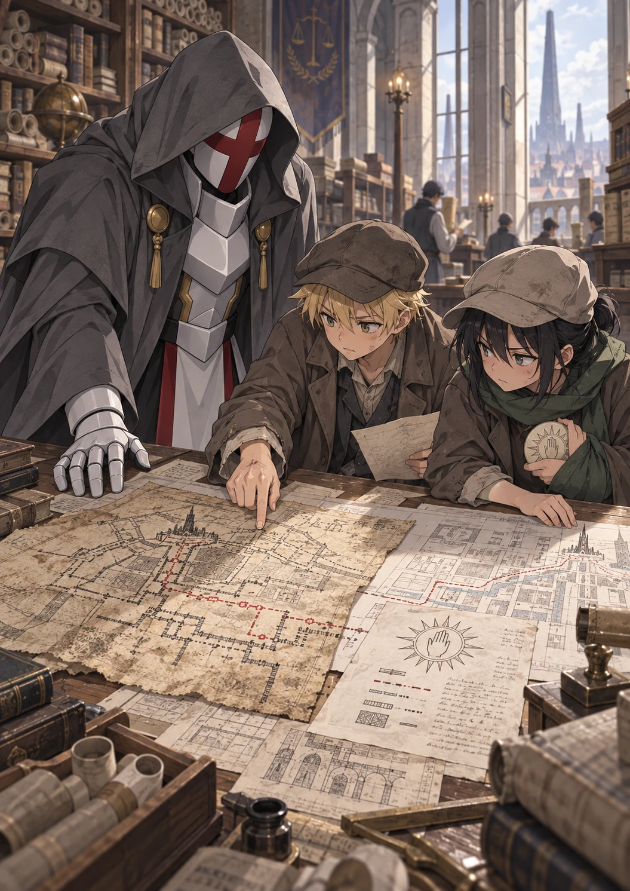
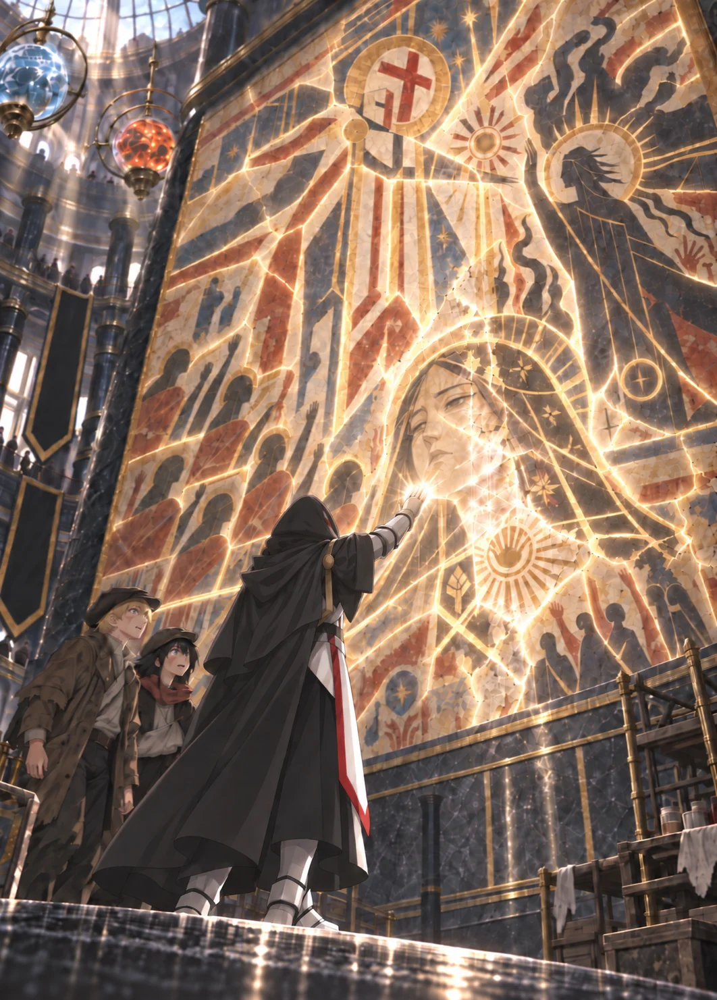
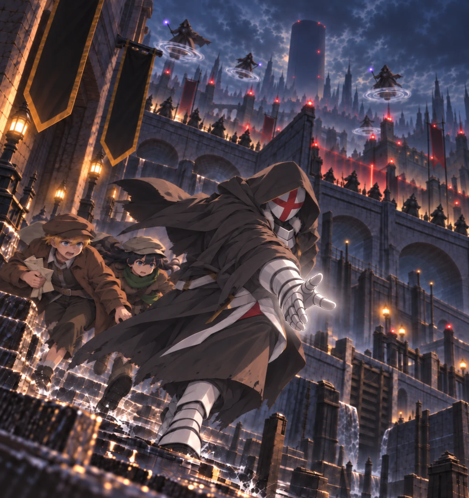

Volume One · Chapter Four
The Man in the Mural
Orin woke to the sound of Veyr trying to pretend nothing had happened.
Cart wheels rattled over the lane below. Someone threw open a shutter and began arguing about coal. The first ovens of the Ashward coughed smoke into the pale morning, and somewhere close by, a woman called three children by three different names before receiving an answer from any of them.
The glassworks loft remained cold.
Gray light entered through the broken windows. It found the abandoned drying racks, the drifts of powdered glass along the walls, and Kisaya asleep beneath a piece of canvas she had somehow taken most of during the night.
Ultimos stood at the far window, exactly where Orin had last seen him.
Orin had awakened twice before dawn. The first time, pain in his foot had pulled him from a dream of falling stone. The second, the bells had rung the hour somewhere beyond the Ashward. Both times the white mage had been there, one armored hand resting against the frame, his hidden face turned toward the tenement across the lane.
The pale light behind that tenement’s curtain was gone now.
Orin could not tell whether the child inside had recovered.
He could not tell whether Ultimos had slept.
There were an increasing number of things he could not tell about the man standing ten paces away.
Canvas rustled behind him.
Kisaya opened one eye, saw Ultimos at the window, and slid a hand inside her jacket.
Her fingers closed around the stolen disk.
She checked it before checking her bruised temple.
Orin watched the pale edge appear between her knuckles. The many-rayed sun caught the weak dawn for an instant before she covered it again.
Kisaya saw him looking.
She glanced toward Ultimos.
His attention appeared fixed on the window.
She nodded toward the rear of the loft.
Orin gathered the canvas and followed her behind a row of warped drying racks. They crouched among wooden frames filmed with dust. Kisaya drew out the disk and held it between them.
In daylight it looked even less like something worth killing for.
Milk-white stone. A ring of marks too fine to read. The open hand surrounded by its sun.
It had no hinge, key teeth, or visible magic.
“Should we show him?” Orin whispered.
Kisaya turned the disk over. The other side was blank except for a shallow groove around its edge, interrupted by seven short notches.
“Do you want to?”
That was not an answer, which meant hers was no.
Orin looked past the racks. Ultimos remained a charcoal shape against the window.
“He asked the Warden about the other temples,” Orin said. “If this came from the ruins—”
“It came from a man the Wardens murdered.”
“Ultimos looked at it when it fell.”
“He looked at the Warden reaching for it. If he recognized the disk, why hasn’t he asked for it?”
“That doesn’t mean it belonged to him.”
“It doesn’t mean it belonged to Ultimos either.”
Kisaya rubbed one thumb across the carved sun.
They had watched Ultimos protect them. They had watched him heal a child’s hand so gently that the boy had not cried.
They had also watched three people disappear.
Orin did not believe Ultimos would kill them for the disk.
The fact that he could not say what Ultimos would do was enough.
“We could leave him,” Orin whispered.
Kisaya looked up from the disk. “For where?”
“Not Nema’s.”
“Not anywhere we know. They have our faces, and every place we could hide belongs to someone they can threaten.” Her voice dropped further. “The next patrol won’t offer us a trial. Ultimos has had every chance to hurt us, and we’re still alive.”
“He erased them.”
“I know.” Kisaya’s fingers tightened around the pale stone. “I’m not saying we’re safe with him. I’m saying we won’t be safe without him.”
Orin had no answer. The worst part was that she sounded afraid rather than defiant.
“Until we know what it is,” Kisaya said, “it stays ours.”
Orin hesitated, then nodded.
The disk vanished inside her jacket.
Across the loft, Ultimos remained motionless. If he knew what Kisaya had concealed, nothing in his posture admitted it.
“We will not return to the healer.”
Ultimos’s voice crossed the loft.
Orin struck his shoulder against a drying frame. It rocked once, shedding glass dust over his hair.
Kisaya stood. “Were you listening?”
Ultimos turned from the window. His gray hood still concealed the smooth helmet, though a narrow edge of white showed beneath his cloak.
“No.”
Ultimos looked past them toward the ladder.
“The approaches to the Ashward will be observed if your descriptions have spread as widely as she believes. Returning to the healer now would expose her.”
The disk seemed suddenly visible through three layers of Kisaya’s clothing anyway.
Kisaya folded both arms carefully, hiding the shape beneath her jacket. “So that’s it? You found one person keeping your magic alive, and now you’re abandoning her?”
Ultimos faced her.
“No.”
His answer was quiet and final.
“It means I intend to learn what her family preserved without delivering her to the Conclave.”
Kisaya’s arms loosened.
Ultimos crossed the loft. Pale morning drew thin lines along his gauntlets as he passed through it.
“Before I approach the Spire—and before any instruction begins—we require routes, refuges, and means to remove threatened practitioners from the Conclave’s reach.”
Ultimos turned toward Kisaya. The hidden face lowered by the smallest degree toward the arm she held across her jacket, then rose again.
“Until such a route exists, neither of you will be left where the Conclave can take you. Your capture would expose every refuge you know and leave the only independent account of my awakening in the Conclave’s hands. Leaving you beside the healer would gather all three targets beneath one roof.”
Kisaya studied him. “I thought your debt was repaid.”
“It was. I chose to use your guidance after it was paid. The danger created by that decision remains under my command.”
He spoke as if arranging defenses rather than offering protection.
Orin found that more convincing.
“And if Nema refuses?” Orin asked.
Ultimos stopped beside the drying racks.
“That matter is settled.”
“Today,” Ultimos continued, “we identify records that survived outside the Spire. We determine whether any approach exists beneath it. We establish a route by which people and anything recovered there can be removed without passing through a Conclave gate.”
His gaze passed from Orin to Kisaya.
“Only then do we return to those who preserved the white art.”
For the briefest moment, his attention shifted toward the empty window across the lane.
“If there is time.”
The qualification sounded as though he resented it.
Orin pushed himself upright. “The Civic Survey Hall keeps property maps, construction plans, and demolition orders. Public records won’t show a secret entrance, but they might show what the Spire was built over.”
Orin had carried repair permits to the Hall for Ressa often enough to know that ordinary surveys were viewed without recording the reader’s name. He had even copied the requirements for the junior records examination once, though he had never been able to pay the application fee. Kisaya knew the eastern delivery court because she had hauled slate through it for Ressa’s crew.
Neither knew how many guards watched it.
“Then we assume enough,” Ultimos said.
He continued until he understood how the records were arranged and how quickly the building could close. Where the children lacked an answer, he marked the uncertainty and moved on. It felt less like making a plan with him than being fitted into one.
When he finished, Kisaya surveyed Orin’s dye-stained coat and single boot. “The entire south market has that description.”
Behind a loose board waited Kisaya’s stiff roofing gloves, Orin’s water-warped primer, and what remained of their room fund: two copper pieces. Kisaya left the gloves and primer where they were and took the coins with a rusted key to the workers’ lockers below. Most held only stiff aprons. Between them, the children found a moth-eaten coat, two caps, a green scarf, and one mismatched boot two sizes too large.
Orin packed its toe with cloth. Ultimos crouched before he could take a second uneven step. Pale lines shortened the toe and redistributed the excess leather through the sole and heel. A split beside the ankle sealed.
The boot fit.
“You could have healed his foot again last night,” Kisaya said.
“Nema had cleaned and protected it correctly. The missing boot remained the defect.”
Kisaya considered that. “You make helping people sound unfriendly.”
Ultimos ignored her.
Kisaya hid her braid and injured arm beneath the canvas cap and scarf. Orin’s coat covered the purple stains, and the felt cap buried his blond hair beneath its brim.
White geometry folded Ultimos’s charcoal cloak into a severe gray coat with a deeper hood. No cloth appeared or vanished. The existing weave shifted into seams and panels copied from coats he had watched in the street. He remained too tall, straight, and still to be ordinary, but no longer resembled a white statue hiding beneath soot.
Kisaya circled him once. “You could have done that yesterday too.”
“Yesterday,” Ultimos said, “I had not yet seen how your citizens dress.”
He stepped toward the ladder.
Orin followed before Kisaya found another question.
They left the glassworks separately.
Kisaya crossed the lane first with a laborer’s irritated stride. Orin followed with a broken frame under one arm. Ultimos joined them only after they had turned twice through the morning crowds.
The searches had not moved north.
They had spread.
Wanted notices covered a wall near the dye market. The drawings were poor, but the words beneath them were not: BLOND MALE, APPROXIMATELY FIFTEEN. BLACK-HAIRED FEMALE, APPROXIMATELY SEVENTEEN. WITNESSES SOUGHT IN CIVILIAN MURDER. POSSIBLY ASSOCIATED WITH THE SOUTHERN MAGICAL DISTURBANCE.
Orin read the notice twice.
“The three who chased us wanted us dead,” he murmured. “Now they’ve made us witnesses again.”
“The three who chased us are dead,” Kisaya said. “Whoever wrote this wants to know how. People cooperate with witnesses. They report murderers.”
Ultimos studied the paper without slowing, then continued walking.
They climbed out of the Ashward without crossing a wall. Mud became fitted stone, open drains vanished beneath engraved grates, and public fountains cleaned their own basins. Black magic became quieter as it became more expensive: heat moved behind tiled walls, lifts climbed on braided air, and water ran uphill without a mage in sight.
Ultimos tracked every spell they passed. He slowed when one branch of a glassblower’s blue flame pulsed behind the others, but continued without comment.
“Nothing?” Kisaya asked.
“It remains inefficient.”
The Civic Survey Hall occupied a broad stone building in the Black Spire’s shadow. Its pale, square lower walls were older than the twisted black additions above them. Iron bridges joined narrow rooftop towers to neighboring ministries, carrying a stream of dark-coated clerks and paper.
Ultimos stopped at the edge of the avenue.
“The lower structure predates the Liberation,” he said.
“How can you tell?” Orin asked.
“I approved its eastern foundation.”
Then he crossed the road.
The delivery entrance stood open.
Kisaya had remembered the court, but not the guard desk inside it. A bored woman with a silver chain studied Orin’s broken frame, Kisaya’s cap, and Ultimos.
“Crew?” she asked.
Orin’s mind emptied.
Kisaya dropped the frame onto the inspection table.
“Third-floor glazing,” she said. “Master says the measurements were wrong again.”
“Which master?”
“If he’d told us his name instead of shouting, I might know.”
Her gaze rested on the frame’s rotted corner, then shifted to Ultimos.
“He with you?”
“Do you want to tell him the measurements were wrong?” Kisaya asked.
Ultimos stood in complete silence.
The guard considered this, decided her morning contained enough difficulty, and waved them through.
They left the broken frame beside a stairwell. The service steps climbed past two locked work floors before Kisaya followed a pair of survey laborers through a propped fire door. They emerged into the public gallery without returning to the guarded entrance.
“You lied to an armed official,” Orin whispered.
“Quietly,” Kisaya said. “Notice how that helped.”
Ultimos led them down the corridor as though he had always intended to enter that way.
The public survey room was almost disappointingly ordinary.
Wooden tables filled a tall-windowed hall. Numbered clay tubes crowded shelves from floor to ceiling. Dust softened everything. Builders argued over boundaries while a landlord in green silk accused a drainage plan of personal betrayal and three clerks ignored him with professional calm.
No magical locks guarded the shelves, and no black fire waited to expose forbidden intentions.
At the front desk, Orin exchanged one of Kisaya’s copper pieces for a table token and a stick of charcoal. The clerk pushed a request slate toward him without looking up.
“District and parcel.”
Ultimos leaned over the slate.
“The Eastern Court. Seventh avenue, below the Meridian road.”
The clerk looked up.
Orin took the charcoal from him.
“Old South Fourteen,” he said quickly. “Foundation surveys and water routes.”
The clerk’s attention lingered on Ultimos’s hood.
“South Fourteen was divided thirty years ago.”
“Demolition index first,” Orin said. “We need the prior parcel numbers.”
That sounded sufficiently tedious to be legitimate.
The clerk pointed them toward a shelf.
For the next hour, Orin learned how thoroughly a city could bury its past without destroying a single map. The Eastern Court became a confiscated ceremonial estate. A healing sanctuary became an exclusive medical storehouse. Roads Ultimos named survived only as divided parcels and avenues renamed after archmages.
Nothing said White Order, and nothing needed to.
Ultimos recognized the absences.
Over a plan dated three years after the Liberation, one hidden fingertip settled near the building’s western edge.
“There was another hall behind this wall.”
Orin studied the ink. “It ends there.”
“The roof load does not.”
Ultimos traced three columns. “These support a span twice the width shown. The survey omitted the western hall.”
Kisaya searched the neighboring rolls. She found a reconstruction permit from eighty years later and flattened it beside the first.
A rectangular void occupied the exact place Ultimos had indicated.
AUTHORIZED SUBLEVEL. NO EXCAVATION.
Orin looked up.
Ultimos had already moved to the next map.
They assembled the old city in pieces: an avenue preserved between houses, a reflecting pool beneath a public bath, and a covered aqueduct reduced on later plans to disconnected inspection shafts.
Ultimos named what had stood there.
Orin found what it had become.
Kisaya found where people still entered it without permission.
Near midday, an elderly clerk brought them a clay tube tied with a faded black cord.
“Foundational survey,” he said. “Don’t breathe hard near it.”
The tube held a thin sheet of treated cloth, yellowed at the folds and repaired so many times that newer thread covered much of its edge.
The labels had been written over.
The lines beneath remained.
Ultimos placed both hands on the table. The old cloth crackled softly beneath his gauntlets.
Orin saw seven towers drawn along the southern rise. A broad court opened east of them. Beneath the streets, narrow double lines connected administrative halls, sanctuaries, reservoirs, and a circular structure outside the old wall.
The Meridian temple.
The survey left it unnamed.
Someone had written TYRANT RITUAL COMPLEX across it in later ink.
“This passage,” Ultimos said.
His finger followed a double line north from the eastern administrative quarter.
“It carried instructors and civic masters between the court and the central halls during emergency closure. There were access chambers beneath each third crossing.”
The route ended near the center of old Veyr.
The modern Black Spire had not existed when the survey was drawn.
“Where is its original foundation plan?” Ultimos asked.
The index offered repairs and sealed sublevels, but no first permit or named builder. Every public record began with the tower already standing.
Orin laid the earliest available survey beside the ancient one. The streets had shifted, but the old aqueduct curved beneath both maps in almost the same shape.
“Here.”
He pinned the cloth with one hand and turned the modern plan with the other.
The White Order passage crossed beneath the eastern edge of the Spire’s present foundations. The later survey replaced it with a maintenance void marked against excavation.
“They built over it,” Orin whispered.
“They built around it,” Ultimos corrected. “The northern support turns here. Whoever laid this foundation encountered the passage and lacked either the ability or permission to remove it.”
“The maintenance void reaches it,” Orin said. “But there’s no public entrance beneath the ministries.”
Kisaya leaned over the table. “That drain still exists.”
She pointed farther north, where the modern storm-water line crossed the predicted route. “There’s a runoff mouth behind the old pumping house. Children use it to reach the north canal.”
Orin looked at her.
“Children whose names are irrelevant to municipal history,” she said.
Ultimos ignored them.
His finger continued along the ancient passage. Beyond the old northern wall, one branch joined a waterworks built into the hillside.
The modern city wall stood farther out now, but the current drainage survey showed a sealed reservoir near the same point.
“If the connection remains continuous,” Ultimos said, “the waterworks provides an outer entrance to the same buried network, away from the Spire’s central approaches.”
“And the reservoir reaches the outer wall,” Kisaya said. “So it’s a way out.”
“An extraction route,” Ultimos said.
“That sounds like a way out wearing armor.”
“A retreat need only carry those who entered. I intend to remove records, artifacts, and prisoners, if any remain.”
Kisaya’s expression lost its brief amusement.
They had found a possible approach toward the Spire and a possible extraction route beyond the northern wall within the same buried system. Neither was certain, but together they offered the beginning of a plan.
Orin copied parcel numbers and distances onto the back of a discarded request slip. Ultimos watched the maps until it seemed he had fixed every line inside his helmet.
Kisaya’s finger stopped near the legend of the old survey.
Among symbols for cisterns, public halls, and structural supports was a tiny open hand surrounded by a many-rayed sun. Unlike the emblems repeated throughout the Meridian temple, this one sat inside a double ring interrupted at seven precise points.
It marked four circular points along the underground network.
Kisaya caught Orin’s sleeve and drew him toward the end of the table. Her body blocked Ultimos’s view as she eased the disk from beneath her jacket.
The symbol on its face matched the center of the legend. The shallow ring around the disk’s reverse matched its border.
Every ray bent at the same angle.
Every finger of the open hand ended in the same small hook.
Every notch divided the outer ring at the same interval.

Beside the map symbol, an older word had been scraped away. Later ink supplied a replacement.
SEALED CIVIC STRUCTURE.
Orin’s skin prickled.
“We ask him,” he whispered.
Kisaya closed her hand around the disk.
“Not here.”
“It marks the tunnels.”
“It marks something under them.”
“Which he might understand.”
“And then it becomes his.”
“Telling him isn’t the same as giving it to him.”
“The last sealed white place we entered had him inside it.” Kisaya kept her voice almost soundless. “This map marks four more. We don’t know whether the disk opens a passage, a prison, or someone else.”
“If someone else is trapped—”
“Then we find out enough to know what we’re releasing before he decides for us.”
Orin looked toward Ultimos.
The white mage had turned to a demolition ledger. He appeared absorbed in a list of structures removed during the first decade of the Liberation.
One page contained more crossed-out names than surviving ones.
Orin thought of the Warden reaching for the fallen disk while chained to the floor.
He thought of Ultimos saying that power had made him a lord.
“Not here,” Orin agreed.
Kisaya returned the disk to her jacket.
They copied the symbol and its four locations.
Then they returned every roll to its tube.
Their plan had worked.
No bells rang. No Warden called for them to stop. The elderly clerk checked their table token, complained that their charcoal had left dust on a survey weight, and returned half a copper because Orin had made no formal copy.
They crossed the public room with a buried route divided between Orin’s sleeve and their memories: one end beneath the Spire, the other beyond the northern wall.
The exit opened into the Hall of Liberation.
The Hall formed a vast rotunda between several civic offices. Black stone columns rose through three levels of balconies. Sunlight poured from a glass dome high above, caught in suspended spheres of water and flame, and broke across the floor in blue and gold.
People crossed beneath it without slowing.
Clerks carried bundles between ministries. Academy students clustered near the stairs. A teacher pointed out the names of the first archmages engraved around the dome while six children tried unsuccessfully to appear interested.
Liberation art covered every wall.
One relief showed black mages opening a locked academy to waiting citizens. Another depicted the Grasping Hand withdrawing from fields of grain. White-robed figures watched from balconies with narrow faces and empty eyes.
Ultimos passed them.
His pace did not change.
Orin noticed each one because Ultimos did not.
They were halfway across the rotunda when the white mage stopped.
The mural occupied the entire northern wall.
It began at floor level and climbed beyond the second balcony, wide enough that the figures nearest its center stood three times taller than living men. Centuries of varnish had darkened its edges, but restoration scaffolds flanked one side, and the colors beneath the dome remained painfully bright.
At the center stood a man in white armor.
A red cross divided his featureless helmet.
His hands were raised over a crowd of civilians. Enormous white lines descended around them in intersecting planes, forming a cage of radiant geometry. Behind the prisoners, a stone gate leaned inward. Roofs split. Towers fell. The painted sky burned with the last battle of an age.
Opposite the white mage, a black-robed archmage drove a staff through the cage. The pale lines broke before him. Civilians reached toward the opening while black mages shielded them from falling stone.
Gold letters crossed the base.
THE LIBERATION OF THE EASTERN GATE
ARCHMAGE CAEDRAN BREAKS THE PRISON-LATTICE OF THE LAST WHITE LORD AND RETURNS THREE HUNDRED SOULS TO FREEDOM.
Orin knew the story. In the school primers available to the Ashward, the white mage inside it had never possessed a name.
Those books described the lattice as a civic binding ritual raised by scores of servants over days—a static ward for confining neighborhoods, not a spell one man could cast amid a collapsing battle.
Now he did not need one.
He looked at Ultimos.
The white mage stood below his painted likeness, his attention fixed on the gate.
His disguise should have made the resemblance uncertain. The charcoal coat concealed the armor. The hood buried the cross. The mural’s proportions were heroic and grotesque, its white lord taller than the gate he supposedly destroyed.
The disguise changed nothing.
Orin knew the angle of that helmet.
He knew the breadth of the pauldrons beneath the coat.
The mural had been waiting four hundred years for the man inside it to stand beneath his own feet.
“We should go,” Orin whispered.
Ultimos studied the painted gate.
“The western arch had already fallen,” he said.
His voice barely carried beyond them.
Kisaya looked at the civilians painted inside the white lattice.
“What?”
“Before Caedran arrived. The western arch collapsed when black fire reached the upper storehouse.”
His helmet shifted beneath the hood.
“There were no soldiers behind us.”
Orin followed his gaze.
Beside the painted Ultimos stood a second white mage. She wore pale robes beneath a short armored mantle. One hand touched the gate. The other extended the lines enclosing the crowd.
The painter had given her a thin, cruel smile.
The caption beneath her read only:
SERVANT OF THE GRASPING HAND.
A crack ran through her face from brow to jaw. Damp had lifted a section of plaster from one cheek. The symbol at her collar had been painted as a closed white fist.
“Fermina,” Ultimos said.
The name contained no anger.
That made it worse.
“Who was she?” Orin asked.
Ultimos did not answer.
He stepped closer to the wall.
“The eastern foundation failed first,” he said. “She held it while her sister and I—”
He stopped.
Orin waited, but Ultimos continued as though the unfinished sentence had never been spoken.
“Caedran was a courier. He carried my order to open the lower road. He did not break the lattice.”
The painted archmage towered in black and gold, staff raised against the white prison.
Ultimos looked back at Fermina.
“Three hundred and twelve people crossed beneath that gate before the foundation gave way.”
Orin’s throat tightened.
“Did she—”
“She was still holding it when it fell.”
Noise continued around them.
Shoes crossed polished stone. A clerk laughed on the upper balcony. The teacher beneath the dome explained that the mural commemorated the courage of black mages who had placed themselves between helpless citizens and white tyranny.
No one lowered their voice or knew they were speaking over a grave.
Ultimos crossed the last few paces.
“Ultimos,” Orin said.
Ultimos had heard. His hand emerged from the gray sleeve anyway.
White metal caught the sunlight.
Two armored fingers touched the crack across Fermina’s painted face.

Pale geometry opened beneath them.
It was no larger than Orin’s palm.
Fine lines entered the plaster. The crack drew closed. Broken grains of pigment lifted from the ledge below and returned to the wall one by one, each finding a place within skin, hair, or the pale curve of a cheek.
The cruel smile disappeared.
Not erased.
Corrected.
The woman who emerged had a broad mouth set in concentration, one brow lower than the other, and tired eyes turned toward the civilians beneath the gate. A narrow scar crossed her chin. That face had never existed beneath the mural’s false paint. Ultimos supplied it from memory, including every imperfection.
Ultimos’s fingers moved to the closed fist at her collar.
The paint separated and rejoined.
The fist opened.
A many-rayed sun unfolded around it.
His fingers lingered over the reopened insignia.
He could have stopped there.
He did not.
Beyond Fermina’s face and insignia, memory gave way to the mural’s existing design. The restoration followed the continuous plaster outward, closing splits in the white cloth, returning silver to the mantle at her shoulders, and restoring the outline of the painted hand she held against the gate.
It reached the gate.
White radiance ran through four centuries of cracks.
Across the entire wall, old pigment brightened. Fallen flakes rose from the floor. Varnish cleared. Blue returned to the sky and fire to the broken roofs. The immense false scene renewed itself around the one face Ultimos had made true.
People stopped walking.
The Hall of Liberation filled with white light.
Ultimos lowered his hand.
On the restoration scaffold, a woman in a brown conservator’s coat stared at the repaired plaster.
Her brush had fallen from her fingers.
“That isn’t possible,” she said.
No one answered.
Her eyes moved to Ultimos’s gauntlet.
Then to the edge of white armor visible where his coat had opened.
Then upward.
The painted red cross looked down from the wall.
The conservator looked beneath Ultimos’s hood.
He turned toward her.
Sunlight entered far enough to find the red line across his helmet.
The woman stumbled back against the scaffold.
“No.”
A clerk caught her arm. “What is it?”
Her gaze remained fixed on the wall and the man beneath it.
“That’s him,” she said. “The man in the mural.”
The rotunda changed, though not all at once.
Her words crossed the open floor and changed each time they passed through another mouth. The man in the mural. White armor. A white mage. Someone laughed once, too sharply. An academy student insisted it was a costume until the teacher beneath the dome pulled his pupils behind him.
Then someone mentioned the pillar above the ruins.
Ultimos turned to Orin and Kisaya.
“We leave.”
Three security mages reacted at once.
They wore black coats reinforced at the shoulders and silver chains looped from collar to belt. The captain, a broad woman with frost already spreading across one hand, pointed toward the exits.
“Clear the hall!” she shouted. “North stair and east court. Move.”
One companion sent a current of wind beneath the upper balconies, carrying the order through the rotunda. The captain swept her free hand toward the crowd and raised a wall of ice between them and the mural—not to trap the civilians, but to shield them.
People ran.
Ultimos stepped away from their path.
At the western column, the third mage struck his palm against a black glass plate.
Red lines ignited inside it.
Ultimos extended one finger.
A white spark crossed the hall.
The plate vanished from the wall.
A clean square remained in the stone for an instant.
Then a single red pulse escaped from the severed channel and raced upward through the column.
Toward the Black Spire.
Ultimos watched it go.
The last civilians spilled through the eastern doors. The teacher carried one child under his arm. The conservator retreated with them, looking back at Fermina’s restored face until the crowd pulled her from sight.
The ice wall remained between the emptying hall and Ultimos.
The security captain came around it slowly.
“Remove the hood,” she ordered.
Ultimos did not.
“On your knees. Hands visible. The children step away from you.”
Orin’s body almost remembered how to obey.
Ultimos’s voice stopped him.
“You protected the people in this hall.”
The captain’s frost spread to her other hand.
“Continue doing so. Do not attack me.”
One younger mage went pale as he studied the fading geometry. “No elemental channel. No focus.”
Whatever he believed about the resemblance, fear required no history.
“Unknown discipline,” the captain said. “Maximum containment.”
The captain’s hands closed.
Ice gathered between them, not in blades but in a dense spear aimed at Ultimos’s chest.
“Last warning,” she said. “Surrender.”
“No.”
The spear launched.
Ultimos moved one hand.
The ice divided around him in two perfect halves.
A point of white light continued in the opposite direction.
It touched the captain below her collarbone.
A close ward flashed over her coat. The white point stopped, divided into hair-thin lines, and ran along the ward until it found every place the protection joined her silver chain. The anchoring links sprang apart.
The point continued.
For one impossible instant, her coat retained the shape of a person. Then black cloth and the broken chain collapsed to the floor. The hands that had directed hundreds of civilians toward safety were gone with the rest of her.
The second mage screamed and threw both arms forward.
Lightning crossed the rotunda.
It struck Ultimos before Orin could shut his eyes.
White armor flashed beneath the disguise. The bolt split across it, tore burning lines through the gray coat, and shattered three tiles behind him.
Ultimos lowered his smoking arm.
The mage tried to gather another spell.
Ultimos closed his fist.
The black focus rings around the man’s wrists contracted.
So did the magic inside them.
There was one brief sound, like glass breaking beneath deep water.
The mage fell and did not rise.
They had cleared the hall before raising a weapon. They had protected every civilian they could reach.
It had not saved them.
They had chosen to stand between Ultimos and the door, and then they had attacked. To him, that had been enough.
The third mage raised a black-fire messenger from his staff. Ultimos opened one hand, and the bird came apart before its first wingbeat. Pale lines caught the mage’s wrists and fixed the staff in the air.
He released it and raised both hands.
Light gathered between Ultimos’s fingers. Orin saw it reflected in the surrendered man’s eyes before Ultimos let it die.
“Remain,” he said.
Pale bands formed around the mage’s ankles and wrists and drew him against the western column. He did not struggle.
Outside, people were shouting.
The warning pulse had escaped. Civilians had seen. Somewhere beyond the doors, the conservator could already be telling someone that the mural had moved beneath a white mage’s hand.
Nothing in Ultimos’s posture resembled pardon. The man had ended his attack. For now, that was enough to change what required correction.
Ultimos turned away from him.
The mural towered above the abandoned hall.
Its painted Ultimos remained a tyrant, hands raised over a prison of white geometry. Its heroic archmage still shattered the lattice. Its civilians still fled from the man who had held the gate above them.
Only Fermina’s face told the truth.
The real Ultimos stood beneath the lie.
Orin waited for Kisaya to speak. She stared at the captain’s empty uniform instead.
“She protected everyone in this hall,” Kisaya said.
“Then she attacked me.”
“And now she’s gone.”
Ultimos looked at the uniform, the fallen lightning mage, and the western column where the alarm had escaped. “Yes.”
He did not ask them to mistake his warning for mercy or the captain’s attack for innocence. Orin could still see her hands raising the wall between danger and the fleeing crowd. That work remained true. So did the empty cloth.
“Breaking concealment was my error,” Ultimos said.
His tone offered no apology, but Orin heard something he had not expected: judgment directed inward.
Kisaya looked up at the restored woman.
“What was she to you?”
Ultimos followed her gaze.
“Fermina.”
Kisaya waited.
He gave her nothing more.
A bell rang outside.
One hard note, repeated by another tower nearer the Spire.
Orin thought of the hidden room beneath Nema’s home. Her reddened hands. The shelves of saved medicine. The three broken curves passed through her family without a name.
“We can’t go back,” he said.
Ultimos faced south.
Stone walls stood between the rotunda and the Ashward. He looked through them as though distance had become another imperfect structure he might dismantle.
“No,” he said.
His voice was quieter than it had been during the fight.
“Not now.”
Another bell answered.
The moment ended.
Ultimos crossed to Orin and pulled the request slip from his sleeve.
“The first pulse reached the Spire before I severed the channel. They will close the central roads, then the bridges. The southern districts will be searched because that is where your descriptions began. Any record associated with white sites will be removed or destroyed once the correct authority understands the report.”
“How long?” Orin asked.
Ultimos glanced at the light moving within the surviving column.
“The signal crossed four relays before failure. If their command structure is competent, we have minutes.”
“How many?” Kisaya asked.
“Fewer than I intend to waste.”
He returned the paper.
“We cannot use the central approach now. The alarm began here; every guard beneath the Spire will face this quarter. We enter the old network through the northern waterworks.”
“To get out?” Kisaya asked.
“To ensure we can, before I enter the Spire.”
Ultimos led them back through the public gallery and down the service stair. They crossed the delivery court as Wardens began pouring into the Hall of Liberation behind them.
Veyr closed around them.
Blue light raced through channels beneath the streets. The public fountains stopped. Water drew backward into their pipes, and iron covers sealed over the basins. Wind lifts descended to the nearest platform and locked in place. Above the roofs, academy riders rose on spinning disks of air and divided into patrol lines.
At the first bridge, earth mages drove both hands down.
Stone barriers rose from the roadway.
People shouted as traffic stopped. Carts jammed wheel to wheel. A mother pulled her child from the crowd before a Warden could close the chain across the pedestrian path.
Yesterday, the same magic had carried grain and repaired drains.
Today, it divided the city into cells.

Ultimos led them into a cloth market before the bridge sealed. He understood containment even when he did not know the streets: Orin supplied names, Kisaya supplied gaps, and Ultimos turned both into movement.
They passed beneath a row of message lanterns just as black fire ignited inside them. One image appeared across every glass face: a hooded figure beneath a red cross, copied poorly from a witness’s frightened description.
SEVERE MAGICAL THREAT.
DO NOT APPROACH.
REPORT WHITE LIGHT.
Kisaya pulled her cap lower.
“At least ours were flattering,” she said.
No one laughed.
The northern road vanished behind a wall of interlocked iron shutters.
Ultimos looked toward the city wall beyond it.
“What stands against the inner face of that wall?” Ultimos asked.
“Homes,” Orin said. “And opening it would show every Warden in Veyr exactly where we were.”
Ultimos measured the distant stone once.
“Then it is not a route. We use the passage.”
That was all.
They crossed a laundry roof while a checkpoint formed below and entered the northern canal district through an unfinished warehouse. When a wind rider passed low overhead, Ultimos pulled them beneath a stone overhang and waited without raising a revealing barrier.
The old pumping house stood beside a canal already lowered for containment. Its wheels had stopped, and stranded fish flashed in shallow pools below.
Kisaya found the runoff mouth behind a stack of rotting sluice boards.
Iron bars covered it.
“Those weren’t there last summer,” she said.
Ultimos took one bar in each hand.
White light passed through the metal so faintly that Orin almost missed it.
The bars separated from the wall without a sound. Ultimos placed the intact grate beside the opening rather than throwing it into the canal.
Beyond lay a brick conduit barely high enough to crouch in.
Cold air breathed from its depths.
Orin unfolded the copied coordinates. The paper shook between his fingers, whether from running or from the rotunda he could not tell.
“The first junction should be under the old reservoir,” he said. “Then east until the brick changes to white stone.”
“If the passage still exists,” Kisaya said.
“It exists,” Ultimos replied.
“You haven’t seen it in four centuries.”
“They built around it.”
He entered first.
Kisaya looked once over her shoulder toward the city. The Black Spire’s crooked crown pierced the clouds above Veyr while red signals climbed its walls like sparks spreading through a dead tree.
Then the bells began.
These notes came more slowly than the urgent peals that had followed the pillar of light.
Three low strokes.
A pause.
One high.
The pattern rolled across Veyr from tower to tower. The sound entered the canal and trembled through the exposed stones beneath Orin’s feet.
Ultimos stopped inside the conduit.
Orin nearly walked into him.
Another sequence began.
Three low.
One high.
“What does it mean?” Ultimos asked.
The last note faded beneath the arches.
“Citywide containment,” Orin said. Every school taught the cadence, though he had never heard it outside a drill. “A rogue master. A broken civic binding. A hostile artifact. Anything the district Wardens can’t hold.”
Kisaya stood at the mouth of the drain, one hand pressed over the disk beneath her jacket.
The bells sounded again.
Ultimos looked back toward the Black Spire.
“They do not know what I am.”
“No,” Kisaya said. “They know what you did.”